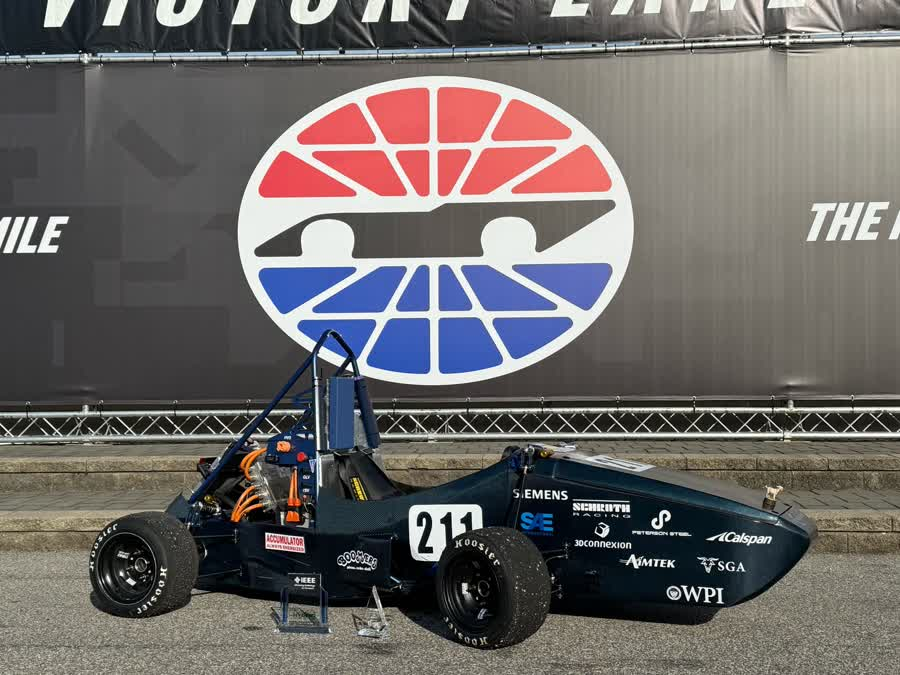
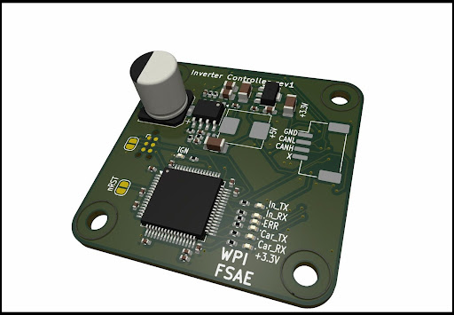
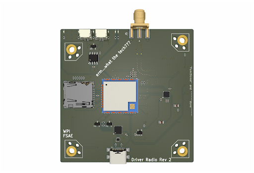
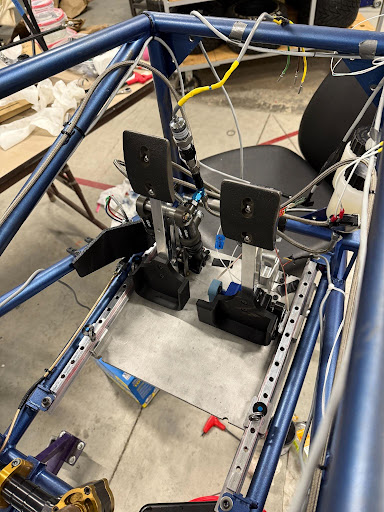

robotics ·
WPI Formula Electric 2025 — Electronics & Software
overview
As part of WPI's Formula Electric team for the 2024–2025 season, I designed and validated embedded electronics for our competition vehicle. My work spanned PCB design, firmware development, and system integration across multiple subsystems.

inverter controller board
The inverter controller serves as the interface between the pedal assembly and the motor controller. It reads analog signals from the throttle and brake pedals, processes them through an STM32 microcontroller, and communicates with the inverter over CAN bus.

Key features:
- STM32-based mixed-signal design
- CAN bus communication to inverter
- Analog signal conditioning for pedal inputs
- Onboard power regulation
The rules require a pedal plausibility check: if the two throttle
sensors disagree by more than 10 % of travel, torque must be cut
until they agree again. The firmware treats this as a small state
machine polled from the 1 kHz control loop:
static bool plausible(uint16_t a, uint16_t b) {
/* T.4.2.4: >10% implausibility for >100 ms cuts torque */
return abs_diff(a, b) <= APPS_TOLERANCE;
}
if (!plausible(apps1, apps2)) {
if (++implausible_ms > 100) torque_request = 0;
} else {
implausible_ms = 0;
}driver radio board
I designed a Bluetooth-based radio system for live telemetry and driver–ground communication. The second revision addressed issues from the initial prototype and added an SD card for local data logging.

pedalbox integration
Beyond PCB design, I worked on integrating the electronics with the mechanical pedal assembly, routing wiring harnesses and verifying sensor signals with oscilloscope measurements.

what i learned
This project gave me end-to-end experience with embedded hardware development — from schematic capture and PCB layout through board bring-up, firmware debugging, and system validation. Debugging communication issues across CAN, UART, SPI, and I2C taught me how to systematically isolate faults using SWD debuggers and oscilloscopes.
Working on a team vehicle also reinforced the importance of documentation and designing for maintainability — the boards I made will be used and modified by future team members.